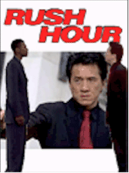
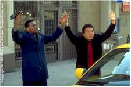
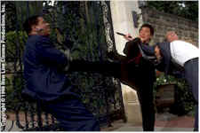
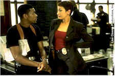

Contents | Features | Reviews | Books | Archives | Store |
 |
|
| Movie Credits | Buy It! |
Rush Hour
Review by Elias Savada
Posted 18 September 1998
|  | Directed by Brett Ratner. Starring
Jackie Chan, Chris Tucker, Screenplay by Jim Kouf and Ross Lamanna, |
Rush out and catch Rush Hour. Put your pedal to the metal and don’t slow down, as everything you laughed at in the trailer ("The fastest hands in the East versus the biggest mouth in the West") hilariously accelerates as this $30 million action comedy speeds along from the fall of British rule in Hong Kong to grid-locked Los Angeles, effectively playing off the cross-cultural, alter-ego mismatch of its stars. No matter that the actual LA rush hour plays a very minor role (actually just one brief scene) as the producers wanted more a title to grab you in than to define the oeuvre. Any more footage probably would have slowed down the plot mechanics anyway.
Director Brett Ratner and comedian Chris Tucker re-team from last year’s Money Talks and their new effort shows a definite improvement. Pacing is improved and the story line holds up better, the latter owing to the script contributed by Jim Kouf (Gang Related, the two Stakeout films) and Ross Lamanna, with uncredited assists from Antwone Fisher and Jeff Nathanson. The loud-mouthed Tucker is James Carter, a brass, ego-centric, suspension-prone LAPD detective who gets into more trouble than the current head of state and is "rewarded" by his sly superior, Captain Diel (Philip Baker Hall), with what Carter believes is a plum job in an FBI kidnapping case. Learning that his chore is merely that of babysitter, the pseudo street-smart bluecoat (well, its more gray designer suit encompassed in flashy sunglasses and a black Stingray) learns his oriental trust is Hong Kong Detective Inspector Lee (Jackie Chan), a soft-spoken, highly skilled (in the martial arts, of course) cop, called to the United States at the behest of his old and still close friend, Chinese Consul Han (Tzi Ma). It is the envoy’s 11-year-old punch-happy daughter Soo Yung (spunky Julia Hsu) that has been abducted by Chinese gangsters, the mysterious and elusive criminal mastermind Juntao and his blonde-haired henchman Sang (Ken Leung), the latter a perfectly capable cinema bad guy who gets some finely choreographed screen time opposite the leads.The Chan-Tucker match-up is broadly reminiscent of the yin-yang combination in Ridley Scott’s Black Rain (1989), with a splash of the dynamic pairing of Gibson and Glover in their initial Lethal Weapon outing (and not their latest lame, tired sequel). It’s one heck of a ride when these two misfits are playing off each other, which is, hallelujah, most of the film. Tucker, believing his counterpart doesn’t understand English, gets a quick lesson in diplomacy from his "chunky king kop" (as in Keystone), while Chan gets an apt pool hall education in the gross misuse of Black American slang. Fancy footwork, dazzling hand play, ferocious gunfights, and amazing stunts (all wrapped in a PG-13 format!), should offer Rush Hour a great chance to boost a general sagging box office from last weekend.
Both stars do a marvelous job of mugging for the camera (including those belonging to a busload of Japanese tourists) and the audience. As they warm to each other’s outrageous proclivities (one’s klutzy garrulous, the other’s quietly dexterous), their relationship cements itself in a series of life-saving incidents and a bonding session in which they reminisce about their fathers, both cops killed in the line of duty. This sequence borrows the comical/uplifting tone of the scar-comparison discussion between Richard Dreyfuss and Robert Shaw in Jaws. Icing on the cake? Sure, when a Chinatown stakeout by our duo has Chan passing time by giving a bravura rendition of Edwin Starr’s 1970 hit War. Bruce Springsteen revived the song in 1986 and Chan does a reprise later in the film. Cherry on top? You bet. As is typical of any Jackie Chan film, there are some gut-busting outtakes as the end credits roll, so DON’T LEAVE EARLY!
Camera work is just fine by Adam Greenberg (Ghost, Terminator 2) and the score by four-time Grammy winner and six-time Oscar nominee Lalo Schifrin won’t win any awards but is certainly serviceable. Rex Linn and Mark Rolston impart earnest performances as get-out-of-my hair FBI agents Whitney and Russ, roles that thankfully rise above parody (but still get a deserved response from the meddling Carter when they offer him a Fed badge for his heroics). Chris Penn (as a low level criminal) and Elizabeth Peña (as a demolition expert in Carter’s unit) provide small but pivotal roles in the loosely contrived plot. Within the confines of the standard-action scenario, the story works just fine and isn’t all that important in this buddy film.
Chan, one of Hong Kong’s own little mini-industry as a star actor, producer, and director for more than two decades is no longer one of Asian’s best kept secrets, in lieu of numerous of his films (Rumble in the Bronx, First Strike, Supercop) earning big bucks and a wider audiences in the U.S. Now, Rush Hour is truly destined to make his first starring role in an American film in over 12 years a memorable hit. Inspired by legendary film comedians Buster Keaton and Harold Lloyd, Chan’s unique action style continues his conquest of Hollywood. Tucker, who earned his comic stripes doing stand-up before being gunned down as a small-time criminal in Jackie Brown, gloriously comes down to earth from his recent 23rd century role as video jockey Ruby Rhod in The Fifth Element. Tucker may not gain as many fan clubs as his co-star already has, but stardom is certainly knocking at his door.
So forget your traffic woes, climb in the car, bring along the kids, and enjoy, enjoy, enjoy!
Contents | Features | Reviews | Books | Archives | Store
Copyright © 1999 by Nitrate Productions, Inc. All Rights Reserved.